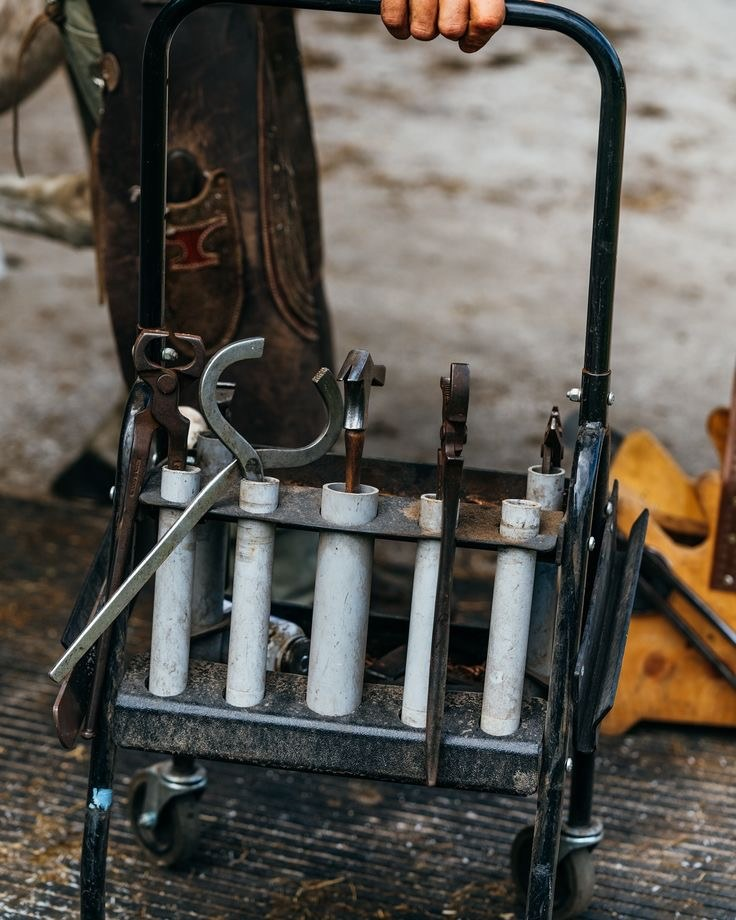
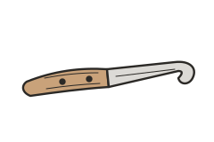
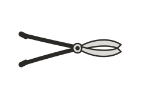
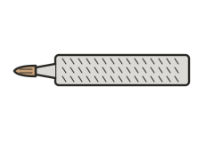
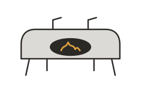
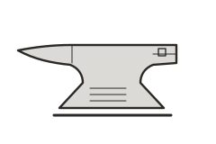
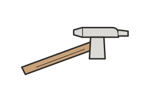
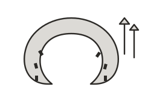

Het gereedschap

Een hoefsmid heeft een emmer vol gereedschap bij zich. Een deel gebruik je voor het bekappen, een deel voor het beslaan. En dan is er nog het leren schootsvel dat je om je benen draagt.
Welk gereedschap gebruik je om te bekappen?



Wat heb je nodig om een paard te beslaan?





Waarom draagt een hoefsmid een schootsvel?
Het schootsvel is een leren schort die je benen beschermt. Tijdens het bekappen en beslaan houd je de hoef van het paard vast op je benen en werk je met scherpe messen en heet ijzer.
Er zijn lange en korte modellen. Een schootsvel heeft zakken en magneten, zodat je gereedschap en nagels altijd bij de hand hebt.
Wat kosten de materialen?
Een paar prijzen uit webwinkels (inclusief btw):
- Set met rasp, messen, hoeftang, hamer en hoefkrabber in een leren tas: € 169,95
- Losse hoefrasp: € 20,56
- Losse hoefijzertang: € 43,31
- Aambeeld: € 518 tot € 1.062
- Draagbare gasoven: € 283 tot € 1.292
Je bent voor het gereedschap dus ongeveer € 1.000 tot € 2.500 kwijt. Een bus of auto, gas, het schootsvel, en de hoefijzers en nagels komen daar nog bij.
Hoeveel verdien je ermee?
Klanten betalen gemiddeld € 40 tot € 70 voor bekappen en € 100 tot € 150 voor beslaan met vier ijzers. Standaard hoefijzers zitten meestal al in die prijs.
Als je de prijs deelt door de tijd die het kost, kom je uit op ongeveer € 50 tot € 80 per uur.
Rekenvoorbeeld: heb je € 1.500 aan gereedschap gekocht en beslaa je een paard voor € 120? Dan heb je het gereedschap na ongeveer 13 paarden terugverdiend, nog zonder de kosten voor ijzers, gas en je bus.
Meer over het inkomen lees je op de pagina Wat is het salaris?